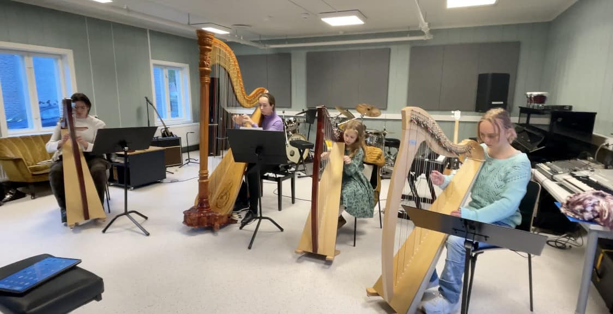
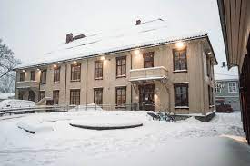
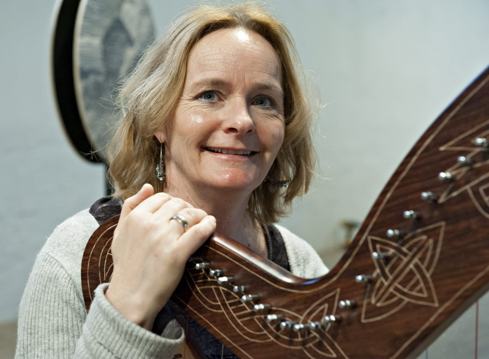

Harp Lessons at Kongsberg Kulturskolen
Kongsberg is one of three places in Norway where you can learn to play the harp, the other two being Oslo and Stavanger.
At Kongsberg Kulturskolen, there are currently five harp students, four playing the lever harp, and one playing the pedal
harp.

Address:
Nansens gate 2, 3616 Kongsberg

Days with harp lessons at Kongsberg Kulturskolen
There are harp lessons at Kongsberg Kulturskolen every Tuesday.
Harp rental
It is possible to rent lever harps at Kongsberg Kulturskolen.
Runi Wold-Kristiansen

Runi Wold-Kristiansen is the harp teacher at Kongsberg Kulturskolen. She has studied at the Norwegian Academy of Music,
and has been working as a freelance harpist for 35 years. For the past few years, she has mainly been performing in
churches, for institutions, business meetings, weddings, and funerals. She has released two CDs so far, one in 2016
called "Harp in A Landscape", and another in 2022 called "Metamorfose". She has also played with several orchestras,
such as the Norwegian Radio Orchestra, Tromsø Symphony Orchestra, Göteborg Symphony Orchestra, has toured with
Concerts Norway, Den kulturelle spaserstokken, and Folkeakademiet, and has taken part in the Glogerfestspillerne.